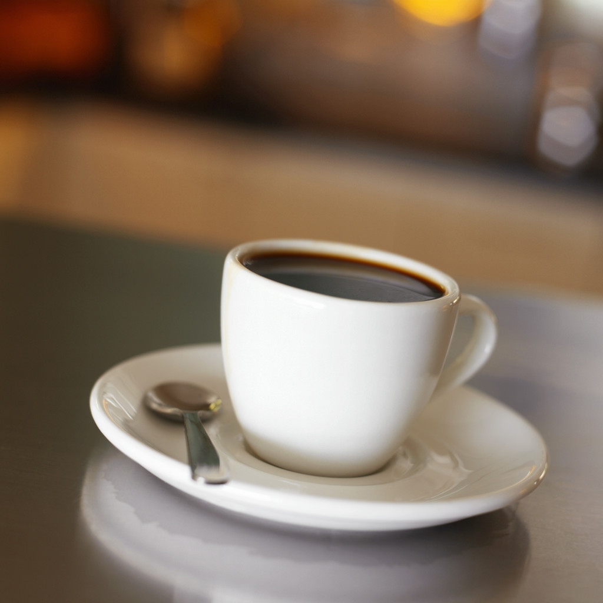

Coffee Consumption Linked to Reduced Skin Cancer Risk
Nancy Organ
Spring 2013

The sunbathing beauty with a latte permanently glued to her hand might
be on to something. A study published by Fengju Song et. al in
the July 2012 edition of Cancer Research provides insight on the
potentially protective effects of coffee against certain types of skin
cancer.
The National Cancer Institute at the National
Institutes of Health estimates that more than 2 million new cases of
skin nonmelanoma skin cancer developed in the United States in 2012
alone. Most of these cancers are a result of harmful levels of
ultraviolet light exposure over the course of a person’s lifetime.
Nonmelanoma skin cancers fall primarily into two categories.
Basal cell carcinoma, or BCC, are cancers in the inner layers of skin;
squamous cell carcinoma, or SCC, occurs in the flatter cells on the
skin’s surface. The American Cancer Society reports that BCC is the
most common cancer found in humans, and accounts for up to 80% of skin
cancer incidences.
Dr. Song’s study followed over a hundred thousand
nurses and health professional who were participating in the Nurses’
Health Study and Health Professionals Follow-up Study. Both studies
regularly collected health data on participants for over twenty years,
starting in the late 1980’s. Dr. Song’s team collected detailed data on
each participant’s dietary caffeine intake. He was particularly
interested in the source and amount of caffeine consumed daily.
Additionally, he wondered whether or not decaffeinated coffee had a
comparable effect on skin cancer incidence as other sources of
caffeine. The analysis controlled for other cancer risk factors
like participants’ physical activity, body mass index (BMI), smoking
status, and complexion.
The results were promising for those seeking to
justify another hot cup of java. The risk of BCC in participants who
averaged more than 3 cups of coffee each day – or about 600 mg of
caffeine-- was roughly 17% lower than those who drank one or fewer cups
of coffee. Caffeine from coffee had a slightly stronger effect
than caffeine from other dietary sources. Decaf coffee, on the other
hand, was negligibly protective. It provided less than a 2% reduction
in BCC risk in women and no protection for men. Neither caffeine source
had a statistically significant influence on the risk of SCC or
melanoma.
Previous studies in mice and isolated human cells
have explored the molecular processes by which caffeine interacts with
damaged or precancerous cells. In both kinds of species, caffeine
incites cell death in cells that contain UV-damaged DNA. Damaged cells
that replicate too quickly are cancerous, but damaged cells that are
dead are no longer a concern.
The outcomes of the Cancer Research article have
implications that transcend personal validation to drink more caffeine.
Basal cell carcinoma affects millions of Americans and places a massive
burden on the healthcare system and individuals alike. The
results do not defend coffee as an excuse to be careless about sun
exposure and risky cancer-causing behaviors. However, the study does
provide us with a cheap, simple, and minimally invasive way to protect
ourselves from skin cancer. If anything, consider it a great reason to
follow up on that coffee date.
About the Author
Nancy Organ graduated from Berkeley with a BA in Statistics in May of 2013. After working as an editor and the Coordinating Editor for Issues for more than 2 years, she returned to the journal as a writer during her final semester.